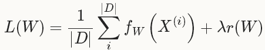
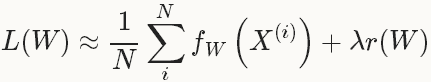
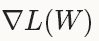
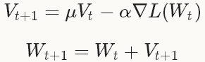
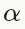
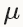

上文提到，到目前为止，caffe总共提供了六种优化方法：
- Stochastic Gradient Descent (type: "SGD")
- AdaDelta (type: "AdaDelta")
- Adaptive Gradient (type: "AdaGrad")
- Adam (type: "Adam")
- Nesterov's Accelerated Gradient (type: "Nesterov")
- RMSProp (type: "RMSProp")
Solver就是用来使loss最小化的优化方法。对于一个数据集D，需要优化的目标函数是整个数据集中所有数据loss的平均值。

其中， fW(x(i))计算的是数据 x(i)上的loss，先将每个单独的样本x的loss求出来，然后求和，最后求均值。r(W)是正则项(weight_decay)，为了减弱过拟合现象。
如果采用这种Loss函数，迭代一次需要计算整个数据集，在数据集非常大的情况下，这种方法的效率很低，这个也是我们熟知的梯度下降采用的方法。
在实际中，通过将整个数据集分成几批(batches)，每一批就是一个mini-batch，其数量(batch_size)为N<<|D|，此时的loss函数为：

有了Loss函数后，就可迭代的求解loss和梯度来优化这个问题。在神经网络中，用forward pass来求解loss，用backward pass来求解梯度。
在caffe中，默认采用的Stochastic Gradient Descent (SGD)进行优化求解。后面几种方法也是基于梯度的优化方法(like SGD)，因此本文只介绍一下SGD，其他的方法，有兴趣的同学可以去看相关文献。
1.Stochastic Gradient Descent (SGD)
随机梯度下降(Stochastic Gradient Descent)是在梯度下降法(Gradient Descent)的基础上发展起来的，梯度下降法也叫最速下降法。SGD在通过负梯度和上一次的权重更新值 Vt的线性组合来更新W，迭代公式如下：

其中，是负梯度的学习率(base_lr)，是上一次梯度值的权重(momentum)，用来加权之前梯度方向对现在梯度下降方向的影响。这两个参数需要通过tuning来得到最好的结果，一般是根据经验设定的。如果你不知道如何设定这些参数，可以参看相关的论文。
在深度学习中使用SGD，比较好的初始化参数的策略是把学习率设为0.01左右(base_lr：0.01)，在训练的过程中，如果loss开始出现稳定水平时，对学习率乘以一个常数因子(gamma)，这样的过程重复多次。
对于momentum，一般取值在0.5~0.99之间。通常设为0.9，momentum可以让使用SGD的深度学习方法更加稳定以及快速。
关于更多的momentum，请参看Hinton的《A Practical Guide to Training Restricted Boltzmann Machines》。
示例：
base_lr: 0.01
lr_policy: "step"
gamma: 0.1
stepsize: 1000
max_iter: 3500
momentum: 0.9
lr_policy设置为step，则学习率的变化规则为base_lr * gamma ^ (floor(iter / stepsize))。
即前1000次迭代，学习率为0.01；第1001~2000次迭代，学习率为0.001；第2001~3000次迭代，学习率为0.0001；第3001~3500次迭代，学习率为 10-5。
上面的设置只能作为一种指导，它们不能保证在任何情况下都能得到最佳的结果，有时候这种方法甚至不work。如果学习的时候出现diverge(比如，你一开始就发现非常大或者NaN或者INF的loss值或者输出)，此时你需要降低base_lr的值(比如，0.001)，然后重新训练，这样的过程重复几次直到你找到可以work的base_lr。
2.AdaDelta
AdaDelta是一种鲁棒的学习率方法，是基于梯度的优化方法(like SGD)。
示例：
net: "examples/mnist/lenet_train_test.prototxt"
test_iter: 100
test_interval: 500
base_lr: 1.0
lr_policy: "fixed"
momentum: 0.95
weight_decay: 0.0005
display: 100
max_iter: 1000
snapshot: 5000
snapshot_prefix: "examples/mnist/lenet_adadelta"
solver_mode: GPU
type: "AdaDelta"
delta: 1e-6
从最后两行可看出，设置solver type为AdaDelta时，需要设置delta的值。
3.AdaGrad
自适应梯度(Adaptive Gradient)是基于梯度的优化方法(like SGD)。
示例：
net: "examples/mnist/mnist_autoencoder.prototxt"
test_state: { stage: 'test-on-train' }
test_iter: 500
test_state: { stage: 'test-on-test' }
test_iter: 100
test_interval: 500
test_compute_loss: true
base_lr: 0.01
lr_policy: "fixed"
display: 100
max_iter: 65000
weight_decay: 0.0005
snapshot: 10000
snapshot_prefix: "examples/mnist/mnist_autocoder_adagrad_train"
# solver_mode: GPU or CPU
solver_mode: GPU
type: "AdaGrad"
4.Adam
是一种基于梯度的优化方法(like SGD)。
5.NAG
Nesterov的加速梯度法(Nesterov's Accelerated Gradient)作为凸优化中最理想的方法，其收敛速度非常快。
示例：
net: "examples/mnist/mnist_autoencoder.prototxt"
test_state: { stage: 'test-on-train' }
test_iter: 500
test_state: { stage: 'test-on-test' }
test_iter: 100
test_interval: 500
test_compute_loss: true
base_lr: 0.01
lr_policy: "step"
gamma: 0.1
stepsize: 10000
display: 100
max_iter: 65000
weight_decay: 0.0005
snapshot: 10000
snapshot_prefix: "examples/mnist/mnist_autoencoder_nesterov_train"
momentum: 0.95
# solver mode: CPU or GPU
solver_mode: GPU
type: "Nesterov"
6.RMSProp
RMSProp是Tieleman在一次Coursera课程演讲中提出来的，也是一种基于梯度的优化方法(like SGD)。
示例：
net: "examples/mnist/lenet_train_test.prototxt"
test_iter: 100
test_interval: 500
base_lr: 1.0
lr_policy: "fixed"
momentum: 0.95
weight_decay: 0.0005
display: 100
max_iter: 10000
snapshot: 5000
snapshot_prefix: "examples/mnist/lenet_adadelta"
solver_mode: GPU
type: "RMSProp"
rms_decay: 0.98
最后两行，需要设置rms_decay值。